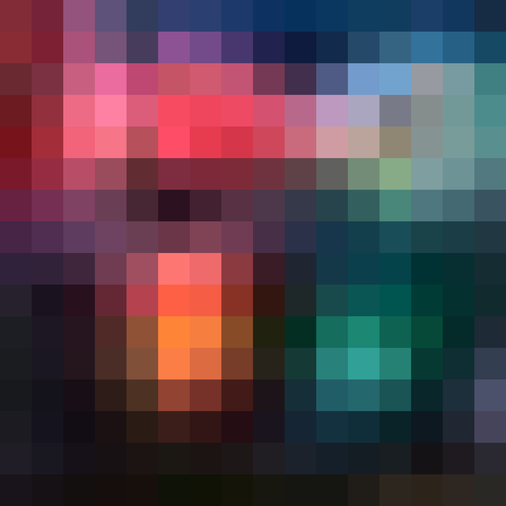
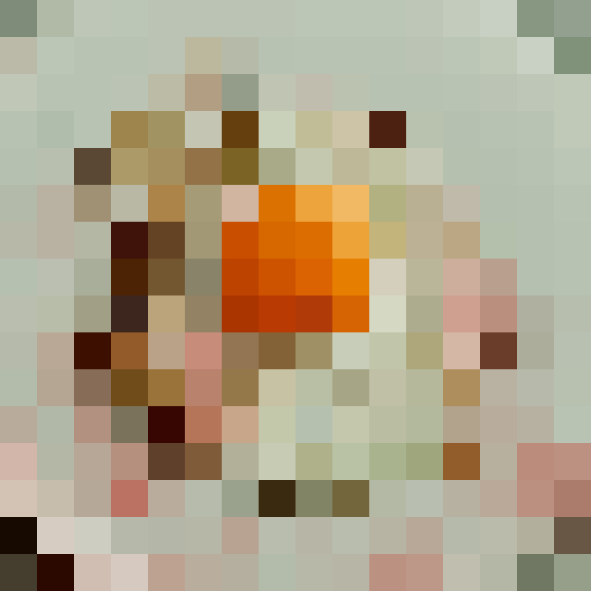
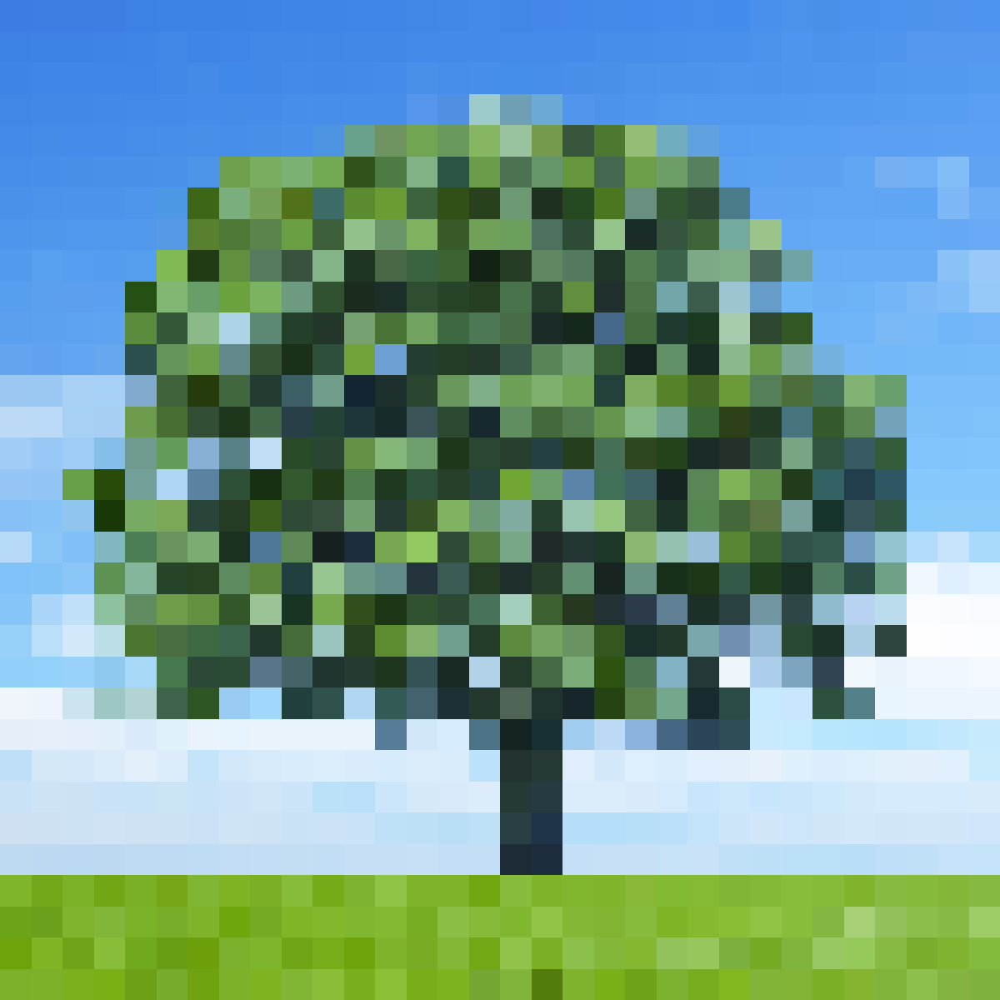
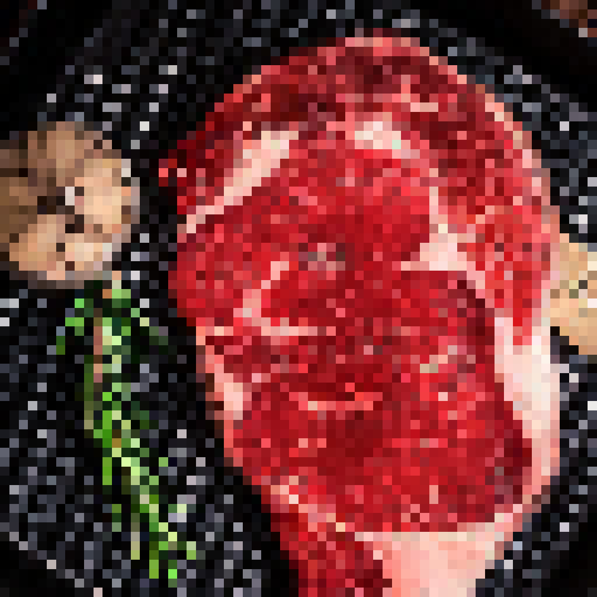

Project Decsription
This project utilized Photoshop to create pixelated images using two different methods. This project was my first introduction to photoshop bedies my brief use of it in highschool.My first challenge with this project was that I wasn't initially using Photoshop for this assignment, opting to use Clip Studio Paint instead. However, this program lacks many of the features of Photoshop, and I had to make the switch in order to achieve the desired results. Once I downloaded Photoshop, the only other challenge for me was getting used to the layout of the program. Ultimately, I learned quite a bit about resizing a canvas, the difference between RGB and CYMK, and how to preserve hard edges in an image.



Extracted Images
The first set of images used the extraction method, taking larger images and zooming in to them to attain images with varying pixel sizes.




Resized Images
The other set of images was created using a resizing method, taking images and resizing the pixel dimensions to add a pixelated effect to the images. Using the nearest neighbor function on Photoshop, the pixels come out sharp and clear.